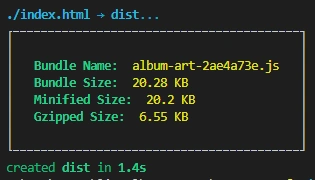
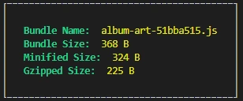

Lorem ipsizzle sit down sit down sizzle amizzle
Crizzle aliquam daahng dawg sure mi. Shut the shizzle up socizzle natoque penatibizzle check it out ma nizzle crazy hizzle
Nullam sapien velizzle, crazy volutpizzle, fo shizzle.
"I'd like to display album art.
Here is my artist and album name."
const albumArt = ({artist, album}) => {
let magic;
// do magic, magic will return an <img> tag
return magic;
}<script src="//my-domain.example.com/album-art.js"></script>
<script>
const art = albumArt({artist: 'epica', album: 'Ωmega'});
document.querySelector("#art").innerHTML = art;
// üëäü§êüí©üí£ ... never trust external HTML
</script>
"Have fun rewriting your [insert enormous component here] using [insert other framework here]"- your least favourite co-worker or boss type of person
"... and please use TypeScript!"
"I'm off for a üç∫ or üçª."
The HTML content <template> element is a mechanism for holding HTML.

artist name
artist bio
This DOM is not live.
No calls will be made to fetch the image.
No CSS is applied.
No script is excecuted.
if ('content' in document.createElement('template')) {
const template = document.querySelector('#template');
// clone the template and fill in the values
const clone = document.importNode(template.content, true);
clone.querySelector('.card-img-top').setAttribute('src', url);
// ...
// now we can add it to the DOM
document.querySelector('body').appendChild(clone);
}
Once added the image is fetched.
CSS is applied to the nodes.
Script is excecuted.
The ability to create custom elements that encapsulate your functionality on an HTML page, rather than having to make do with a long, nested batch of elements that together provide a custom page feature.
class AlbumArt extends HTMLElement {
constructor() {
// Always call super first
super();
// add your magic
}
}customElements.define('album-art', AlbumArt);class List extends HTMLULElement {
// enter code here; but think of the consequences
// do you really need to extend a built-in element?
// how it that not confusing ü§∑
// on the other hand, you have your fallback for free üéâ
};
customElements.define('list', List, { extends: "ul" });
Lorem ipsizzle sit down sit down sizzle amizzle
Crizzle aliquam daahng dawg sure mi.
Shut the shizzle up socizzle natoque penatibizzle
check it out ma nizzle crazy hizzle
Nullam sapien velizzle, crazy volutpizzle, fo shizzle.
Shadow DOM allows hidden DOM trees to be attached to elements in the regular DOM tree.

const shadow = this.attachShadow({mode: 'open'});Open: Elements of the shadow root are accessible from JavaScript outside the root.
Closed: Denies access to the node(s) of a closed shadow root from JavaScript outside it.
const wrapper = document.createElement('div');
wrapper.classList.add('wrapper');
const image = document.createElement('img');
// use the img attributre of the custom element if present
let imageUrl = 'img/placeholder.webp';
if (this.hasAttribute('img')) {
imageUrl = this.getAttribute('img');
}
image.src = imageUrl;
// add the new elements to the shadow DOM
wrapper.appendChild(image);
shadow.appendChild(wrapper);const styleElem = document.createElement('style');
styleElem.textContent = `
.wrapper {
position: relative;
}
img {
display: block;
object-fit: cover;
width: 100%;
height: 100%;
}
`;
shadow.appendChild(styleElem);const styleElem = document.createElement('style');
styleElem.textContent = `
:host {
--primary: rgb(0 110 205);
--fallback: red;
--background: rgb(249 249 249);
}
p {
background-color: var(--background);
color: var(--primary, var(--fallback, white));
}
`;
shadow.appendChild(styleElem);Though many more exist
LitElement uses lit-html to render into shadow DOM, and adds API to manage properties and attributes. Properties are observed by default, and elements update asynchronously when their properties change.
import {LitElement} from 'lit-element';
export class AlbumArt extends LitElement { ... }
customElements.define('album-art', MyElement);import {LitElement, customElement} from 'lit-element';
@customElement('album-art')
export class AlbumArt extends LitElement { ... }import {LitElement, html} from 'lit-element';
export class AlbumArt extends LitElement {
...
render() {
return html`

import {LitElement, property} from 'lit-element';
export class MyElement extends LitElement {
...
@property({type: String})
artist = 'Amorphis';
@property({type: String})
album = 'Skyforger';
...
}import {LitElement, css, html} from 'lit-element';
class AlbumArt extends LitElement {
static get styles() {
return css`
:host { color: var(--text-color); }
a { text-decoration: none; }
::slotted(*) { font-family: Roboto; }
`;
}
render() {
return html`
Note that only direct slotted children can be styled with ::slotted().
import {LitElement, html, eventOptions} from 'lit-element';
...
@eventOptions({passive: true})
private _handleTouchStart() {
const event = new CustomEvent('touch-started', {
detail: {
message: 'Touch event touchstart occured in custom element'
}
});
this.dispatchEvent(event);
}
render() {
return html`
`;
}Stencil is a toolchain for building reusable, scalable Design Systems. Generate small, blazing fast, and 100% standards based Web Components that run in every browser.
import { Component, Prop, h } from '@stencil/core';
@Component({
tag: 'album-art',
})
export class AlbumArt { ... }import { Component, Prop, h } from '@stencil/core';
@Component({ tag: 'album-art' })
export class AlbumArt {
...
render() {
return (

import { Component, Prop, h } from '@stencil/core';
@Component({ tag: 'album-art' })
export class AlbumArt {
...
@Prop() artist: string;
@Prop() album: string;
...
}import { Component, Prop, h } from '@stencil/core';
@Component({
tag: 'album-art',
styleUrl: 'album-art.css',
shadow: true
})
export class AlbumArt {
...
}With Shadow DOM enabled, elements within the shadow root are scoped, and styles outside of the component do not apply.
:host {
color: var(--text-color, var(--fallback, black));
}
a {
text-decoration: none;
}import { Event, EventEmitter, Listen } from '@stencil/core';
...
@Event() handleTouchStart: EventEmitter<AlbumArt>;
@Listen('touchstart', { target: 'document', passive: true })
handleTouchStart(event) {
this.touchStarted.emit(this);
}
The Progressive JavaScript Framework
$ vue create album-art-webcomponent

$ vue-cli-service build --target wc --name album-art album-art.vue$ vue-cli-service build --target wc --name prefix '*.vue'In web component mode, Vue is externalized. This means the bundle will not bundle Vue even if your code imports Vue. The bundle will assume Vue is available on the host page as a global variable.
$ vue-cli-service build --target wc --inline-vue --name album-art album-art.vuevue.js
LitElement
 E.g., folks who like Vue should be able to use Vue to build their components, but still be able to consume things built another way. Similarly, folks who want to build in Vue should have a bigger market than Vue-centric apps. That future is enabled by interop + low runtime cost.
— Alex Russell (@slightlylate) April 8, 2021
Too bad Twitter's tweet embed is not a Web Component üò•
APIs to create new custom, reusable HTML tags
with controlled style and markup that cannot leak.
Custom components built on the Web Component standards will work across modern browsers and can be used with any JavaScript library or framework that works with HTML.
üìß lucien@isaac.nl
üê¶ lucienimmink
üåç www.isaac.nl